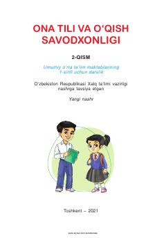

OT1-sinf o'quvchilari uchun ona tili va o'qish savodxonligi darsligi.
Mazkur darslik umumiy o'rta ta'lim maktablarining 1-sinf o'quvchilari uchun mo'ljallangan bo'lib, ona tili va o'qish savodxonligini o'rgatishga qaratilgan. Kitobda o'quvchilarning nutqini o'stirish, savodxonligini oshirish va mantiqiy fikrlashini rivojlantiruvchi qiziqarli matnlar hamda mashqlar berilgan.